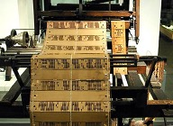
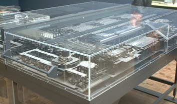
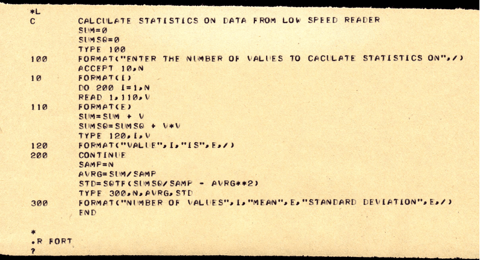

Первые подобия языкам программирования появились еще задолго до появления ЭВМ. Так, можно привести пример условно программируемых устройств: Музыкальная шкатулка (ребра на металлическом цилиндре) или жаккардовый ткацкий станок (Джозеф Жаккар придумал использовать перфорированные карты, которые впоследствии стали использоваться для программирования первых ЭВМ). Так или иначе, сценарий работы этих устройств определялся человеком с помощью различных методов, будь то металлический цилиндр или перфокарта, а значит эти устройства можно было программировать.
Вал музыкальной шкатулки
Так или иначе, сценарий работы этих устройств определялся человеком с помощью различных методов, будь то металлический цилиндр или перфокарта, а значит эти устройства можно было программировать.

Перфокарты в жаккардовом ткацком станке
Первые алгоритмы схожие с языками программирования начали появляться еще в 19-м веке. Так, Ада Лавлейс написала алгоритм для аналитической машины, созданной Чарльзом Бэббиджем. Эта машина должна была автоматизировать вычисления, а написанный алгоритм позволял вычислять числа Бернулли. Алгоритм не смогли реализовать на практике. Если бы это произошло, то ход истории мог измениться и первые компьютеры на паровой тяге появились бы на 50-100 лет раньше.
В 1938-м году Конрадом Цузе была создана первая ЭВМ – Z1, однако она служила для вычисления различных выражений и не отличалась возможностью программирования. Тем не менее, машина имела устройство считывания перфорированных карт. Спустя почти с десяток лет и несколько ЭВМ, в 1944-м году Конрад Цуз на базе предыдущих машин создает новую – Z4, а вместе с ним и первый в мире высокоуровневый язык программирования – планкалкюль (Plankalkül). Этот язык программирования поддерживал все привычные операции для современных: Операции назначения, условные операторы, два вида циклов (while и for), вычисления чисел с плавающей запятой, массивы и даже обработку исключений. Однако этот язык не сыскал популярности, т.к. Цуз создавал его в отрыве от западных специалистов, и полностью труд о языке планкалкюль был опубликован только в начале 1970-х. Поскольку машина Z4 была электромеханической, транслятора языка планкалкюль в машинный код на тот момент не существовало, а значит варианта реализации написанного кода просто не существовало. Однако в 2000-м году был создан упрощенный диалект – планкалкюль-2000, и интерпретатор для запуска этого кода на современных машинах.

Воссозданная в 1989-м году копия компьютера Z1
В начале 1950-х годов ученые поняли, что необходимо систематизировать и автоматизировать процесс написания машинного кода для многочисленных созданных ЭВМ. Таким образом на свет появился ассемблер – первый и самый значимый на сегодня низкоуровневый язык программирования. Его задачей было упрощение работы программистам, представляя машинный код в более удобный формат, написание высокоуровневых языков программирования, таких как планкалкюль (но имеющих практическую значимость). Вместо машинного кода (последовательности нулей и единиц), код на ассемблере выглядел как запись некоторых команд латинскими буквами, символами и десятичными числами.
Для каждой новой ЭВМ в последствии будут написаны свои ассемблеры, имеющие одинаковый синтаксис, но работающие на разных архитектурах. Появление такого языка значительно облегчило жизнь программистам того времени, ведь вместо кучи нулей и единиц им приходилось работать с упорядоченными командами. Терялась возможность легкой ошибки в коде. Программы стало проще контролировать.
Ассемблер в обновленном виде различных диалектов до сих пор используется в широком спектре задач. На нем пишутся загрузчики и ядра операционных систем, драйверы для устройств и т.д. Его используют, когда необходим непосредственный доступ к инструкциям процессора. Также, все высокоуровневые языки программирования опираются на ассемблер. Чем ниже уровень кода, тем больше скорость работы выполняемой программы.
В середине XX-го века человек продолжил упрощать себе жизнь. Стали появляться полностью электрические вычислительные машины. Fortran (Formula Translator) стал вторым высокоуровневым языком программирования после немецкого планкалкюля, однако стал первым языком, которому был написан транслятор, а значит язык успешно применялся в практике. Язык был создан в 1957-м году под руководством Джона Бэкуса в корпорации IBM. Он предназначался для различных научных расчетов. Компилятор для этого языка оптимизировал код, т.к. люди не хотели терять и без того малую производительность, относительно ассемблера.

Синтаксис языка программирования Fortran
С тех пор человек все больше и больше упрощал себе жизнь. Создавались более новые языки программирования высокого уровня, порог вхождения в программирование снижался с каждым годом.
Илья Глинских
2 ноября 2022
Главная страница
Бесполезная информация
Наглядная демонстрация решения задач
Я старался
Определение программной инженерии
Низкие и высокие языки программирования
Современные языки программирования
Несколько слов о каждом
Рейтинг самых популярных языков программирования по мнению Habr
Информация в графиках